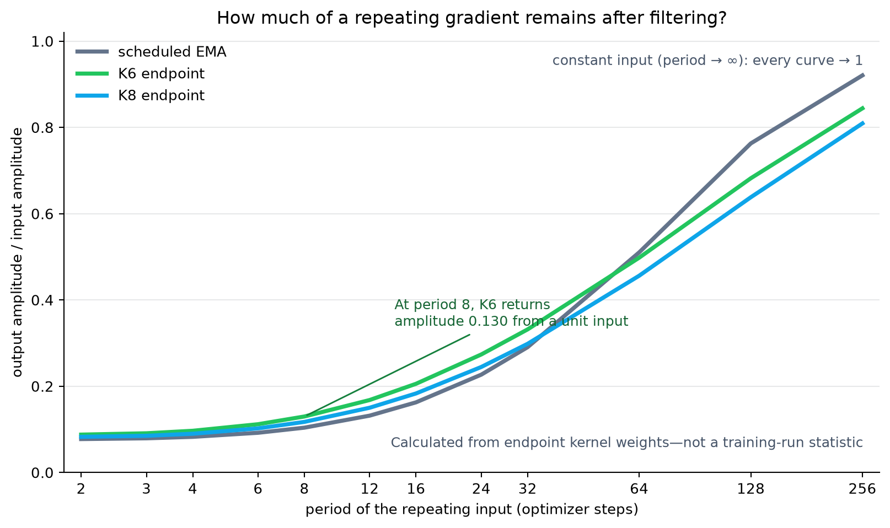
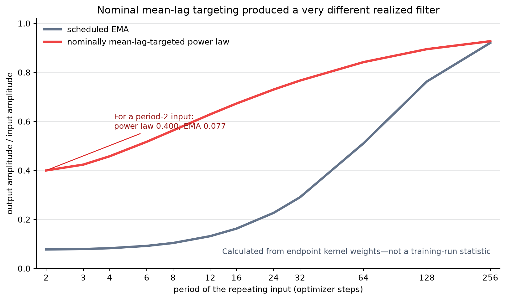

Toward a principled theory of momentum
Research memo · 29 August 2026
The goal is a momentum rule derived from what the optimizer is doing, rather than a decay schedule chosen by hand. The NanoGPT runs do not give us that rule yet. They do narrow the problem: changing one exponential memory over training helps, but several memory timescales still do better; increasing their number from six to eight does not.
1. What the experiments narrowed down
Momentum replaces the current gradient with a weighted history:
The list of weights by age is the momentum kernel. A single exponential moving average has , so it has one memory timescale. Bi-Maxwell mixes two EMAs with different decay rates. K6 and K8 mix six and eight EMA components, respectively; their mixture weights change during training. A schedule changes the kernel over the training trajectory.
The kernel's mean lag is the average number of optimizer steps back represented by its weights.

Three observations matter.
- Changing the memory timescale during training helps, but one scheduled EMA leaves a substantial gap in this run.
- K6 and K8 are nearly tied. The number of mixture coefficients alone does not explain the gain.
- A power law with nominally mean-lag-targeted exponents performs much worse than its control. The finite implementation missed the intended mean-lag match, so this run does not isolate mean lag or tail shape.
The comparisons still mix two effects: the endpoint kernel and the history that initialized the stored momentum. These possibilities require different controllers. If the endpoint kernel causes the gain, a small state-driven filter may be enough. If the initialization path causes it, the controller must retain information about the pre-switch momentum history.
2. What Muon removes—and what it leaves
Muon turns the filtered gradient matrix into an update direction while discarding its common size. For the ideal matrix-sign operation, multiplying the entire input by a positive number changes nothing:
The deployed Newton–Schulz iteration—the fixed computation Muon uses to approximate the matrix-sign update—is only approximately invariant, but the exact identity gives the right conceptual distinction.
A direct test of the deployed code returned identical outputs for power-of-two input scalings and about 1% relative differences for several non-power-of-two scalings on one random 768×768 matrix. The additive epsilon and BF16 rounding prevent a formal exact claim.
Common scale can disappear while momentum still matters. Suppose the history contains a slow matrix pattern A and a faster, differently oriented pattern B. After filtering, Muon receives
Multiplying both coefficients by the same positive number changes nothing. Changing their ratio, , can change the dominant matrix directions, provided A and B are not already aligned. Muon can then choose a different update direction.
Working hypothesis. Momentum matters in Muon by changing the relative strength and phase of gradient patterns that vary on different timescales and point in different matrix directions. It does not act only by changing the size of a smoothed gradient.
3. What one point in the filter plots means
These plots are arithmetic on frozen endpoint kernel weights; they are not summaries of training runs. Each point is the output amplitude from a unit-amplitude gradient pattern that repeats every P optimizer steps:
The plotted height is the amplitude remaining after the kernel filters that input. Period 2 flips sign every step; larger periods vary more slowly. A height of 0.13 means that a unit-amplitude input produces an output with amplitude 0.13. The phase shift is not shown.
Every curve uses the same scale convention. A constant gradient passes through unchanged, so every response approaches 1 as the period approaches infinity. This removes an arbitrary common multiplier; it does not make the finite-period responses equal.

The K6 curve is above K8 at every sampled finite period. The two endpoint filters have different shapes: K6 has slightly shorter endpoint memory and attenuates these repeating inputs less. Both converge to 1 for a constant input, but nothing requires them to cross at a finite period. This ordering does not imply that K6 trains better: K6 and K8 have nearly tied validation loss, with K8 slightly ahead in the discovery run.
Relative to the scheduled EMA, both K-Maxwell endpoints attenuate periods 2–32 less and periods 64–256 more. In plain terms, their outputs contain a little more of the fast repetitions and a little less of the 64–256-step repetitions. This describes the endpoint filters; it does not explain the validation-loss difference.

The power-law result rules out this construction, not the family. Its realized mean lag missed the target; its endpoint also transmits roughly 4–6× as much sign-flipping content and has roughly 6–9× the EMA's white- noise amplification. Here white-noise amplification means the output variance produced by independent unit-variance input noise. The run's poor loss is consistent with these mismatches, but it does not identify which mismatch mattered.
Why test periods 64–256 first? At each period, we multiplied the squared K8-versus-EMA endpoint-response difference by the observed oscillation strength of the stored end-of-run gradients. The largest products occurred at periods 64–256, so that range is the first intervention target. This is a ranking rule, not evidence that the range caused the K8 gain.
The filter plots identify realized endpoint differences; they do not isolate a winning scalar summary. They nominate a specific K-Maxwell–EMA difference for testing, but they do not explain why K-Maxwell wins.
4. What edge of stability says—and fails to say—about Muon
Here edge of stability means the phenomenon that pins curvature near the value that makes the learning rate critical, on the verge of divergence. For gradient descent on one quadratic direction, the critical relation is
where η is the learning rate and λcrit is the critical curvature in that direction.
The scalar momentum calculation asks how a kernel changes that critical curvature. For a period-2 pattern, the gradient from k steps ago has sign (−1)k relative to the current gradient. The kernel therefore multiplies the pattern by
This quantity F is the flip transmission. For the scalar update with multiplicative decay a, the period-2 boundary is
With no multiplicative decay, a = 1 and this reduces to the usual value 2 when F = 1. This is the simple deterministic version of the kernel correction that appears in momentum edge-of-stability analyses such as Andreyev et al.; the appendix gives the full mode calculation.
Muon still shows the curvature-pinning phenomenon. Across constant-learning-rate runs that had reached a steady regime, equilibrium curvature rose as learning rate fell. Learning rate varied from 0.6 to 1.7, while the product of learning rate and curvature stayed between about 1.15 and 1.54. Rows still changing appreciably, or represented by only two usable checkpoints, were not counted as equilibria. The evidence supports an edge- of-stability-like attractor, although its constant is not the gradient- descent value 2.
The scalar kernel correction did not predict these cross-trajectory Muon screens. Removing momentum increased flip transmission about 11×. The equation above predicts roughly 11× lower critical curvature; measured curvature was about 3× higher. In a separate screen, changing learning rate by 3.4× changed the period-2 amplitude by 16–19× rather than the preregistered near-linear amount. Normalized amplitude also stayed roughly flat across the 11× flip- transmission change in three of four windows.
These cross-trajectory screens do not show that flip transmission is sufficient to predict Muon's state. They do not invalidate it as a scalar filter statistic. The runs had different histories, and the momentum-free run's weight norms were about 0.31× the reference; a same- state intervention is required.
Muon's scale invariance suggests what the scalar calculation misses. If one matrix pattern dominates, changing its amplitude by F can disappear during normalization. A kernel can still matter by changing the relative amplitudes and phases of differently oriented matrix patterns. That pattern-competition account remains a hypothesis.
The EoS evidence supports curvature pinning under Muon but does not support the scalar flip-transmission correction. The existing comparisons do not show that flip transmission determines the pinned curvature.
5. Proposed experiment: does endpoint shape change Muon's direction?
This section describes a proposed causal experiment; it is not a result or an algorithm. The question is whether the endpoint filter difference identified above changes Muon's update direction when the model, stored gradient history, and all other optimizer state begin identically.
The experiment uses four branches because each branch has one specific job. Two unchanged controls measure ordinary numerical divergence. Two intervention branches compare filters. All four copy one checkpoint, Adam state, data order, and hyperparameters. They also use one shared bank of EMA buffers warmed before the fork, so the stored raw gradient history is identical at the moment of intervention.
The intervention pair is accepted only if four scalar summaries match within registered tolerances. Those summaries are response to a constant gradient, mean lag, flip transmission, and white-noise amplification; the pair should otherwise differ as much as possible at periods 64–256. A branch separation would show that the four summaries are not sufficient; it would not identify which remaining shape feature caused the separation. The registered record will include the filter pair, matching errors, and allowed drift. If no pair meets the tolerances, no GPU run is launched.
The primary measurement is whether Muon's update direction changes immediately. At the first post-fork step, every branch sees the same model and data. We compare the matrix-sign updates produced by the two intervention filters against the difference between duplicate controls. A decomposition by period range is a secondary diagnostic only if the update directions separate.
Post-fork measurements determine whether an immediate direction change is useful. Validation loss, curvature, and update directions are tracked for a window registered with the filter pair, and the interpretation is fixed in advance:
| observation | interpretation | next move |
|---|---|---|
| immediate direction change and later loss separation | endpoint shape has a useful local effect | search for the smallest state-driven filter that reproduces it |
| immediate direction change but no loss separation | shape changes Muon, but this change is not useful here | do not build a controller around it |
| no resolved immediate change, but later loss separates | the endpoint intervention acts through accumulated post-fork dynamics | model the slower closed-loop state |
| neither direction nor loss separates | this endpoint intervention is unsupported | do not promote 64–256 from this test; scheduling history remains a candidate |
This design removes pre-fork history as a confound. Because every branch starts from the same state, an immediate change comes from the endpoint filter itself. A delayed-only change says the intervention acts through post-fork dynamics. A null result rejects this particular endpoint difference; it does not by itself prove that scheduling history caused the original K-Maxwell gain.
6. Recommended next steps and decisions
Recommendation: proceed mechanism-first and stop broad momentum- family tuning for now. The next GPU work should answer which state a principled rule must control, not search for another schedule.
Step 1 is a zero-GPU feasibility check for the filter-shape intervention. We solve for the two concrete filters described in Section 5 and report their coefficient lists, matching errors, and response curves. This prevents an ill-posed intervention from consuming a run.
Step 2 is the four-branch same-state experiment, conditional on a satisfactory filter pair. This is the shortest test of whether a controlled endpoint-shape change is sufficient to alter Muon's update and training outcome from the same state. A null would leave scheduling history as a candidate, not establish it.
Step 3 is a separate same-state edge-of-stability fork. From one checkpoint and one learning rate, switch among kernels with substantially different flip transmission and measure where curvature equilibrates. This directly tests whether the Andreyev-style kernel correction survives under Muon without relying on cross-trajectory screens.
Step 4 depends on the two experiments. If endpoint shape has a useful immediate effect, find the smallest online state variable that predicts that effect and implement it with the fewest memory states. If the effect is delayed, model momentum as trajectory state. If neither experiment separates, stop treating the current frequency range as the leading explanation and test the matching, initialization, or other trajectory explanations before proposing a controller.
The requested sign-off is therefore narrow.
- Approve or reject the mechanism-first ordering.
- Approve preparation of the concrete matched filter pair; this does not launch a GPU experiment.
- After inspecting that pair, approve or reject the four-branch run.
- Approve or defer the separate same-state edge-of-stability fork.
- Defer controller implementation until these results choose its state variable.
Appendices
A. Exact discovery measurements and controls
| momentum rule | hardware | validation loss | gain over matched control |
|---|---|---|---|
| bi-Maxwell control | 2×H100 SXM | 3.27547 | — |
| scheduled one-EMA | 2×H100 SXM | 3.27449 | +0.00098 |
| scheduled K6 | 2×H100 SXM | 3.27261 | +0.00286 |
| scheduled K8 | 2×H100 SXM | 3.27250 | +0.00297 |
| nominal mean-lag-targeted power law, γ 1.28 → 1.66 | 8×A100 | 3.29123 | −0.01287 |
Each row is a single-seed discovery measurement. The power law uses its separate matched A100 control. The same one-EMA configuration gained +0.00068 on its A100 control, so the one-third figure is stack-sensitive.
B. Full scalar characteristic-equation derivation
Let
Define the kernel polynomial . For a trial mode, set xt = rt. A lag of k steps gives
Therefore the filtered gradient is
Substitute this into the update, divide by xt, and move every term to the left to obtain . This result is exact for the deterministic scalar model. It is not a Muon stability theorem.
C. Where the local expected-loss approximation comes from
For a proposed update , second-order Taylor expansion around the current parameters gives
Here H is the Hessian of the loss at the current parameters, and U is the proposed update direction before multiplication by −η.
The first term rewards alignment with the true gradient. The second is the curvature cost of the chosen direction. Taking an expectation conditional on the current model and optimizer state gives the expected local change.
This requires a smooth local loss and a controlled remainder. A filtered stochastic update is correlated with gradient noise, so a minibatch gradient cannot silently replace the true gradient. Weight decay adds first-order, cross, and quadratic terms. The expression is a possible diagnostic, not a derived optimizer.
D. Evidence limits and implementation details
- The transfer curves are endpoint filter descriptors. They are not the exact accumulated kernel of a time-varying schedule or the realized Muon update.
- Each plotted endpoint value is at P ∈ {2, 3, 4, 6, 8, 12, 16, 24, 32, 64, 128, 256}. The EMA curve uses μ = 0.95 and endpoint β = 0.944. The K6, K8, and power-law arrays are finite-history, unit-constant-response descriptors computed from the configured endpoint kernels; the power-law schedule uses γ 1.28 → 1.66. The exact values are published in the figure generator.
- The 64–256-step ranking uses oscillation strength reconstructed from lagged gradient correlations at step 3000 of one recorded run. An early-training reconstruction became invalid beyond period 12 and is not used here.
- Exact matrix sign is invariant to positive common scaling. The deployed implementation uses an additive epsilon and BF16 arithmetic, so exact homogeneity is not guaranteed.
- Unit response to a constant input fixes the otherwise arbitrary overall kernel scale. For nonnegative weights it is also the maximum response by the triangle inequality. The finite power-law approximation has a tiny negative tail (about 1.4×10−5 at one late lag), too small to affect the plotted endpoint responses.
- The momentum-free and step-size screens compare different trajectories and weight norms. They challenge scalar accounts but identify no replacement.